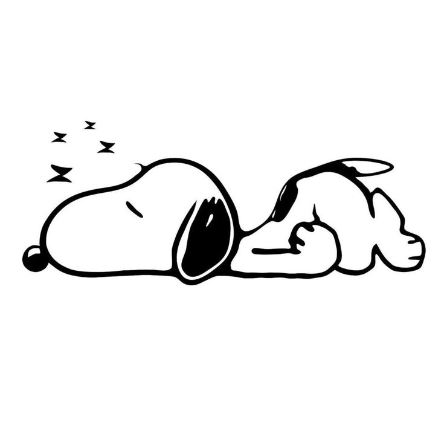
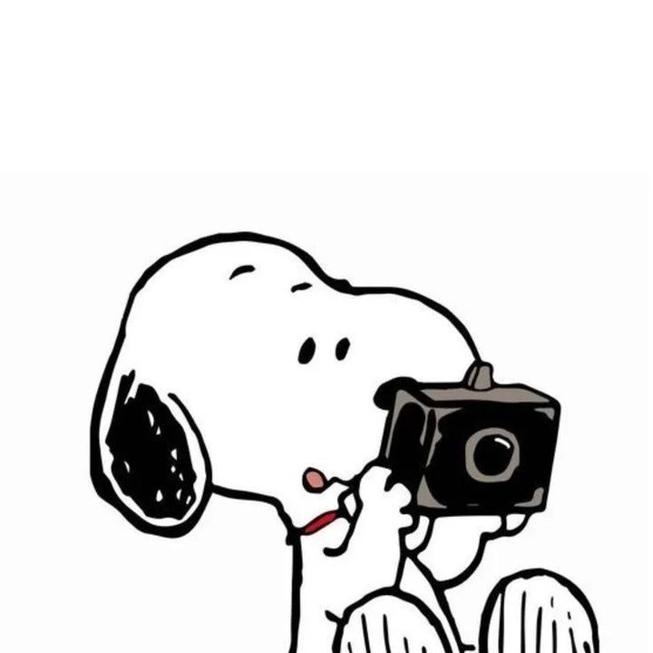

~tugas membuat website~
Lagu Somebody's Pleasure dari Aziz Hedra
menggambarkan perasaan lelah seseorang yang hidup penuh kepura-puraan.
Meski terlihat baik-baik saja, hatinya kosong.
Dikelilingi banyak orang, ia tetap tak menemukan ketenangan
dengan kata lain, "when ya" 😹
I've been too busy, ignoring, and hiding
I've never been enjoyin' my serenity
Soul try to figure it out
Wondering to get a love that is so pure
I always pretending and lying
I've never been enjoyin' my serenity
Soul try to figure it out
Wondering to get a love that is so pure
it was in a blink of an eye
When will I got the love that is so pure?
Gotta have to always make surelyrics 🎶 🎶
About what my heart actually say
Stay awake while I'm drowning on my thoughts
Sometimes a happiness is just a happiness
Even if I've got a lot of company
That makes me happy
From where I've been escapin'
Running to end all the sin
Get away from the pressure
Gotta have to always make sure
That I'm not just somebody's pleasure
I got used to feeling empty
'Cause all I got is unhappy
Happiness, can't I get happiness?
Even if I've got a lot of company
That makes me happy
From where I've been escapin'
Running to end all the sin
Get away from the pressure
Gotta have to always make sure
That I'm not just somebody's pleasure
Find a way how to say goodbye
I've got to take me away
From all sadness
Stitch all my wounds, confess all the sins (confess all the sins)
And took all my insecure
Gotta have to always make sure
That I'm not just somebody's pleasure
That I'm not just somebody's pleasure


nama: maulana yusuf al akbar
kelas: X1 ma alkautsar
website by: maulana yusuf al akbar
ib: ahmad mulyana